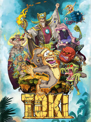

Toki
Toki
Detalles
|  | |
| Tiempo de juego | No Jugado |
| Última actividad | Nunca |
| Añadido | 09/09/2023 10:35:56 |
| Modificado | 09/09/2023 10:38:08 |
| Estado de finalización | Not Played |
| Librería | Steam |
| Fuente | Steam |
| Plataforma | PC (Windows) |
| Fecha de lanzamiento | 07/06/2019 |
| Puntuación de la Comunidad | 82 |
| Puntuación de la Crítica | 70 |
| Puntuación de usuario | |
| Género | Adventure |
| Desarrollador | Microids |
| Editor | Microids |
| Característica | Achievements Full Controller Support Remote Play On TV Single Player |
| Enlaces | Punto de encuentro Discusiones Guías Noticias Página de la tienda PCGamingWiki Logros |
| Tag | 2D Adventure Arcade classic Difficult Platformer Remake Retro Side Scroller |
Descripción
The return of the wacky monkey!
Toki sets off on a new adventure! The cult action/platform game originally released on arcade machines in 1989 is back with a super-simian new version, featuring all-new hand-drawn graphics and re-orchestrated music!
Toki the warrior lived peacefully in the jungle with his sweetheart Miho. Appearing out of nowhere, the terrifying voodoo sorcerer Vookimedlo and heinous demon Bashtar kidnap Miho and turn the poor Toki into a chimpanzee! Unfortunately for his sweetheart, he has become a hairy, lethargic ape...

Rediscover Toki 30 years on:
Playing as Toki, explore lush environments invaded by foul creatures!
The Labyrinth, Neptune Lake, the Cave of Fire, the Ice Palace, the Jungle of Darkness and the Golden Palace are infested with Vookimedlo's lackeys. Saving Miho won't be easy! These despicable and terrifying beings have friendly names like Boloragog, Rambacha, Mogulvar, Zorzamoth and Bashtar... And if Toki's looks are anything to go by it will be no walk in the park!
You'll have to make the best of it to succeed. Luckily, Toki can walk, jump, swim, climb and spit! That's right, he uses his saliva to great effect to dispose of his enemies…
Rise to the legendary difficulty of the Golden Age of video games:
"Insert coin"… Remember spending all your hard-earned pocket on the arcade machines to complete your favorite games? Now you can enjoy the same challenging gameplay without breaking the piggy bank. Put your name at the top of the high score table!
Rookie players can also enjoy the game with a new easier mode.

A masterfully made remake:
The game has been entirely redrawn by hand by Philippe Dessoly, illustrator of well-known manga cartoons, such as Captain Harlock and UFO Robot Grendizer, comics and video games. He also worked on the Amiga version of Toki back in 1991 and the game Mr. Nutz in 1992. His drawings have further improved Toki's apish good looks.
The music has been fully re-orchestrated by composer Raphaël Gesqua, providing a retro and modern soundtrack for Toki's adventure. This award-winning composer has created the music for more than one hundred video games.
On the technical side, developer Pierre Adane has worked tirelessly to bring this thrilling experience to life. He also worked on Mr. Nutz (1992) and created the tennis game Top Spin (2003).

Toki sets off on a new adventure! The cult action/platform game originally released on arcade machines in 1989 is back with a super-simian new version, featuring all-new hand-drawn graphics and re-orchestrated music!
Toki the warrior lived peacefully in the jungle with his sweetheart Miho. Appearing out of nowhere, the terrifying voodoo sorcerer Vookimedlo and heinous demon Bashtar kidnap Miho and turn the poor Toki into a chimpanzee! Unfortunately for his sweetheart, he has become a hairy, lethargic ape...
Rediscover Toki 30 years on:
Playing as Toki, explore lush environments invaded by foul creatures!
The Labyrinth, Neptune Lake, the Cave of Fire, the Ice Palace, the Jungle of Darkness and the Golden Palace are infested with Vookimedlo's lackeys. Saving Miho won't be easy! These despicable and terrifying beings have friendly names like Boloragog, Rambacha, Mogulvar, Zorzamoth and Bashtar... And if Toki's looks are anything to go by it will be no walk in the park!
You'll have to make the best of it to succeed. Luckily, Toki can walk, jump, swim, climb and spit! That's right, he uses his saliva to great effect to dispose of his enemies…
Rise to the legendary difficulty of the Golden Age of video games:
"Insert coin"… Remember spending all your hard-earned pocket on the arcade machines to complete your favorite games? Now you can enjoy the same challenging gameplay without breaking the piggy bank. Put your name at the top of the high score table!
Rookie players can also enjoy the game with a new easier mode.
A masterfully made remake:
The game has been entirely redrawn by hand by Philippe Dessoly, illustrator of well-known manga cartoons, such as Captain Harlock and UFO Robot Grendizer, comics and video games. He also worked on the Amiga version of Toki back in 1991 and the game Mr. Nutz in 1992. His drawings have further improved Toki's apish good looks.
The music has been fully re-orchestrated by composer Raphaël Gesqua, providing a retro and modern soundtrack for Toki's adventure. This award-winning composer has created the music for more than one hundred video games.
On the technical side, developer Pierre Adane has worked tirelessly to bring this thrilling experience to life. He also worked on Mr. Nutz (1992) and created the tennis game Top Spin (2003).